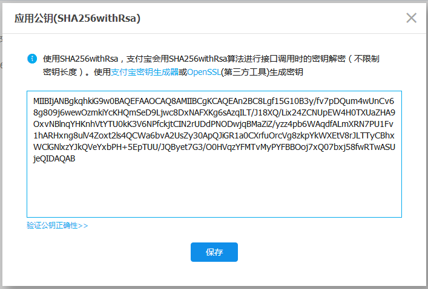
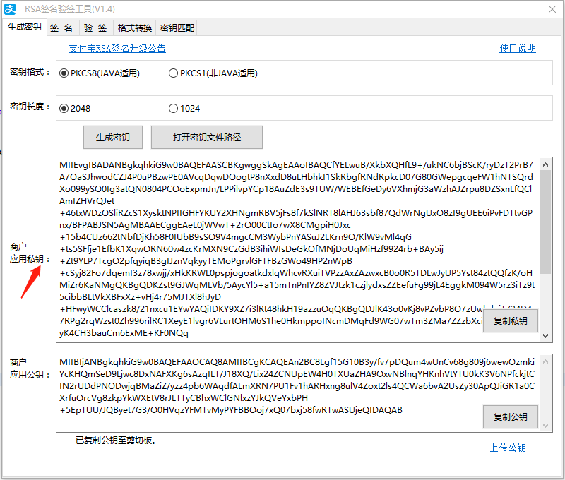

1、登录支付宝成功后，打开网页
https://openhome.alipay.com/platform/keyManage.htm#
2、得到第一个内容【APPID】，如下图
3、下载工具
secret_key_tools_RSA_win.zip
4、打开工具，到文件夹双击【RSA签名验签工具.bat】，如下图
5、在弹出的窗口中，点击【生成密钥】按钮，如下图
6、生成密钥后，如下图：
7、得到第二个和第三个内容，第二个是【商户应用私钥】，第三个是【商户应用公钥】
8、将【商户应用公钥】的内容拷贝到网页中的【应用公钥】输入框中，如下进行操作

9、设置成功后得到第四个内容，是【支付宝公钥】，如下图
10、设置第五个内容【授权回调地址】，如下图，输入格式：http://kxcsgo.com/api/alipay/notifyAliPay
11、这样只需要保留第一个内容【APPID】,第四个内容【支付宝公钥】和第二个内容【商户应用私钥】，第五个内容【授权回调地址】到后台设置中即可，如下图的两个内容
